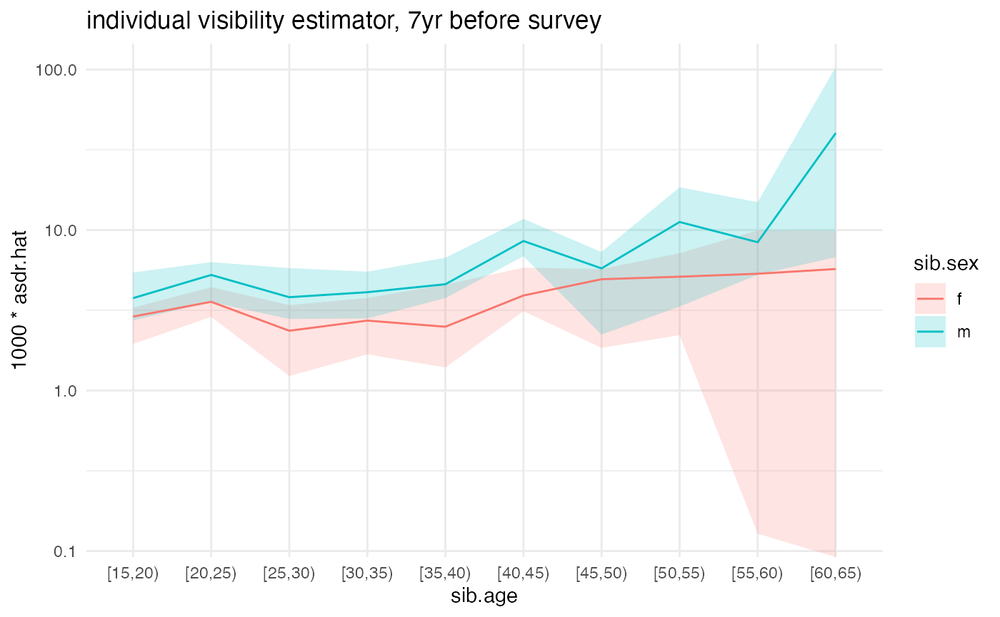

Estimating death rates from sibling history data
Dennis M. Feehan
2020-11-08
sibling-estimates.Rmdlibrary(siblingsurvival) library(tidyverse) #> ── Attaching packages ─────────────────────────────────────── tidyverse 1.3.0 ── #> ✓ ggplot2 3.3.2 ✓ purrr 0.3.4 #> ✓ tibble 3.0.4 ✓ dplyr 1.0.2 #> ✓ tidyr 1.1.2 ✓ stringr 1.4.0 #> ✓ readr 1.4.0 ✓ forcats 0.5.0 #> ── Conflicts ────────────────────────────────────────── tidyverse_conflicts() ── #> x dplyr::filter() masks stats::filter() #> x dplyr::lag() masks stats::lag() # be sure you have at least version 0.0.2.9000 of surveybootstrap # run devtools::install_github('dfeehan/surveybootstrap') # for the most recent version library(surveybootstrap) # this is helfpul for timing library(tictoc)
Overview
It will be helpful to define a few important terms before we start our analysis:
-
ego- an ego is a survey respondent -
cell- a cell is a generic group for which we wish to produce estimates. Usually, a cell is defined by a time period, an age range, and a sex. So, for example, a cell might be women who were age 30-34 in 2015.
For the purposes of this vignette, we’ll assume that we starting from two datasets:
- one dataset has a row for each survey respondent
- one dataset has a row for each sibling who is reported by a survey respondent
We’ll then calculate estimates from the sibling histories in three main steps:
- Create an esc dataset, so called because there is row for each ego X sibling X cell
- Aggregate this esc dataset up into an ec dataset, which has a row for the reports made by each ego for each cell
- Aggregate this ec dataset up into estimates for death rates, using either the individual or aggregate visibility approach (or both)
Opening up the demo datasets
We’ll start by opening up the demonstration DHS dataset.
data(model_dhs_dat)
Now we’ll use prep_dhs_sib_histories to ready the sibling histories for analysis. (Please see the Preparing Data vignette for more details.)
prepped <- prep_dhs_sib_histories(model_dhs_dat, varmap = sibhist_varmap_dhs6, keep_missing = FALSE) #> Warning: `select_()` is deprecated as of dplyr 0.7.0. #> Please use `select()` instead. #> This warning is displayed once every 8 hours. #> Call `lifecycle::last_warnings()` to see where this warning was generated. #> Warning: `mutate_()` is deprecated as of dplyr 0.7.0. #> Please use `mutate()` instead. #> See vignette('programming') for more help #> This warning is displayed once every 8 hours. #> Call `lifecycle::last_warnings()` to see where this warning was generated. #> Warning: `filter_()` is deprecated as of dplyr 0.7.0. #> Please use `filter()` instead. #> See vignette('programming') for more help #> This warning is displayed once every 8 hours. #> Call `lifecycle::last_warnings()` to see where this warning was generated. #> 638 out of 35082 (1.82%) reports about sibs have unknown survival status. #> 602 out of 35082 (1.72%) reports about sibs have unknown sex. #> Removing reported sibs missing survival status or sex. #> ... this removes 642 out of 35082 ( 1.83 %) sibling reports. # we'll only keep the variable we will need for this analysis ex.ego <- prepped$ego.dat %>% select(caseid, psu, stratum_analysis, age.cat, sex, wwgt) ex.sib <- prepped$sib.dat
Let’s take a look at the datasets we’ve produced. First, here’s a dataset that has information about survey respondents. (We’ll refer to these survey respondents as ‘ego’):
glimpse(ex.ego) #> Rows: 8,348 #> Columns: 6 #> $ caseid <chr> " 1 1 2", " 1 3 2", " 1 4 … #> $ psu <dbl> 1, 1, 1, 1, 1, 1, 1, 1, 1, 1, 1, 1, 1, 1, 1, 1, 1, 1… #> $ stratum_analysis <dbl> 26, 26, 26, 26, 26, 26, 26, 26, 26, 26, 26, 26, 26, … #> $ age.cat <fct> "[30,35)", "[20,25)", "[40,45)", "[25,30)", "[25,30)… #> $ sex <chr> "f", "f", "f", "f", "f", "f", "f", "f", "f", "f", "f… #> $ wwgt <dbl> 1.057703, 1.057703, 1.057703, 1.057703, 1.057703, 1.…
And here’s a long-form version of the sibling history data – there’s one row for each reported sibling.
glimpse(ex.sib) #> Rows: 34,440 #> Columns: 24 #> $ .tmpid <chr> " 1 1 2", " 1 3 2", " … #> $ caseid <chr> " 1 1 2", " 1 3 2", " … #> $ wwgt <dbl> 1.057703, 1.057703, 1.057703, 1.057703, 1.057… #> $ psu <dbl> 1, 1, 1, 1, 1, 1, 1, 1, 1, 1, 1, 1, 1, 1, 1, … #> $ doi <dbl> 1386, 1386, 1386, 1386, 1386, 1386, 1386, 138… #> $ sibindex <dbl> 1, 1, 1, 1, 1, 1, 1, 1, 1, 1, 1, 1, 1, 1, 1, … #> $ sib.sex <chr> "m", "f", "m", "f", "m", "f", "m", "f", "m", … #> $ sib.alive <dbl> 1, 1, 1, 1, 1, 1, 1, 1, 1, 1, 1, 0, 0, 1, 1, … #> $ sib.age <dbl> 42, 27, 46, 33, 40, 49, 22, 30, 49, 50, 35, N… #> $ sib.dob <dbl> 876, 1056, 828, 984, 900, 792, 1116, 1020, 79… #> $ sib.marital.status <dbl> NA, NA, NA, NA, NA, NA, NA, NA, NA, NA, NA, N… #> $ sib.death.yrsago <dbl> NA, NA, NA, NA, NA, NA, NA, NA, NA, NA, NA, 3… #> $ sib.death.age <dbl> NA, NA, NA, NA, NA, NA, NA, NA, NA, NA, NA, 4… #> $ sib.death.date <dbl> -1, -1, -1, -1, -1, -1, -1, -1, -1, -1, -1, 1… #> $ sib.died.pregnant <dbl> NA, NA, NA, NA, NA, NA, NA, NA, NA, NA, NA, N… #> $ sib.died.bc.pregnancy <dbl> NA, NA, NA, NA, NA, NA, NA, NA, NA, NA, NA, N… #> $ sib.death.cause <dbl> NA, NA, NA, NA, NA, NA, NA, NA, NA, NA, NA, N… #> $ sib.time.delivery.death <dbl> NA, NA, NA, NA, NA, NA, NA, NA, NA, NA, NA, N… #> $ sib.place.death <dbl> NA, NA, NA, NA, NA, NA, NA, NA, NA, NA, NA, N… #> $ sib.num.children <dbl> NA, NA, NA, NA, NA, NA, NA, NA, NA, NA, NA, N… #> $ sib.death.year <dbl> NA, NA, NA, NA, NA, NA, NA, NA, NA, NA, NA, N… #> $ alternum <chr> "01", "01", "01", "01", "01", "01", "01", "01… #> $ sib.endobs <dbl> 1386, 1386, 1386, 1386, 1386, 1386, 1386, 138… #> $ sibid <int> 1, 2, 3, 4, 5, 6, 7, 8, 9, 10, 11, 12, 13, 14…
Laying the groundwork
First, we’ll need to add an indicator variable for each sibling’s frame population membership. In other words, we need to create a variable that has the value 1 for each sibling who was eligible to respond to the survey, and 0 otherwise. In this example data, we’ll assume that conditions similar to a typical DHS survey hold: i.e., we’ll assume the survey design was such that siblings would have been eligible to respond if they
- are alive
- are female
- are between the ages of 15 and 50
For a given survey, these criteria will differ. You’ll have to find out what the criteria for inclusion in the frame population were in order to produce estimates from sibling histories
ex.sib <- ex.sib %>% mutate(in.F = as.numeric((sib.alive==1) & (sib.age >= 15) & (sib.age <= 49) & (sib.sex == 'f')))
Let’s look at the distribution of frame population membership
In this example dataset, a small number of the in.F values is missing. (In a real dataset, there could well be more.) Since we need to be able to determine whether or not each sibling is on in the frame population, we would drop siblings missing in.F values from the analysis.
Specifying cells
When we produce estimated death rates from sibling histories, we usually do so for different sex X age group X time period combinations. These are called cells.
Our next step is to create an object that describes the cells that we plan to produce death rate estimates for. This means we need to specify the time period and age groups that we’ll be using. We’ll use the helper function cell_config to do this:
cc <- cell_config(age.groups='5yr', time.periods='7yr_beforeinterview', start.obs='sib.dob', # date of birth end.obs='sib.endobs', # either the date respondent was interviewed (if sib is alive) or date of death (if sib is dead) event='sib.death.date', # date of death (for sibs who died) age.offset='sib.dob', # date of birth time.offset='doi', # date of interview exp.scale=1/12)
We’re specifying that we want
- 5-year age groups, starting from 15 and ending at 65
- to produce estimates for the 7-year window before each survey interview (so, slightly different for each respondent)
- the
dobcolumn of our sibling dataset has the time siblings start being observed (their birthdate) - the
endobscolumn of our sibling dataset has the time siblings stop being observed (the interview or, if they’re dead, the date of death) - the
death.datecolumn of our sibling dataset has the date the sibling died (if the sibling died) - the
doicolumn of our sibling dataset has the date the respondent who reported about the sibling was interviewed - in our survey, times are counted in months, so we set
exp.scale=1/12to indicate that we need to divide total exposures by 12 to get years
Estimating death rates
Given these preparatory steps, the sibling_estimator function will take care of estimating death rates from the sibling histories for us.
ex_ests <- sibling_estimator(sib.dat = ex.sib, ego.id = 'caseid', # column with the respondent id sib.id = 'sibid', # column with sibling id # (unique for each reported sibling) sib.frame.indicator = 'in.F', # indicator for sibling frame population membership sib.sex = 'sib.sex', # column with sibling's sex cell.config=cc, # cell configuration we created above weights='wwgt') # column with the respondents' sampling weights names(ex_ests) #> [1] "asdr.ind" "asdr.agg" "ec.dat" "esc.dat"
sibling_estimator returns a list with the results. We’ll focus on asdr.ind, which has the individual visibility estimates, and asdr.agg, which has the aggregate visibility estimates.
Here are the individual visibility estimates:
glimpse(ex_ests$asdr.ind) #> Rows: 20 #> Columns: 10 #> Groups: time.period, sib.sex [2] #> $ time.period <chr> "7yr_beforeint", "7yr_beforeint", "7yr_beforeint", "7yr_b… #> $ sib.sex <chr> "f", "f", "f", "f", "f", "f", "f", "f", "f", "f", "m", "m… #> $ sib.age <chr> "[15,20)", "[20,25)", "[25,30)", "[30,35)", "[35,40)", "[… #> $ num.hat <dbl> 22.0328126, 28.0821501, 16.2842433, 14.9613173, 10.707900… #> $ denom.hat <dbl> 7622.79371, 7864.77994, 6906.23741, 5486.86758, 4286.5537… #> $ ind.y.F <dbl> 11400.964, 11400.964, 11400.964, 11400.964, 11400.964, 11… #> $ n <int> 6864, 6864, 6864, 6864, 6864, 6864, 6864, 6864, 6864, 686… #> $ wgt.sum <dbl> 6798.047, 6798.047, 6798.047, 6798.047, 6798.047, 6798.04… #> $ asdr.hat <dbl> 0.002890386, 0.003570621, 0.002357904, 0.002726750, 0.002… #> $ estimator <chr> "sib_ind", "sib_ind", "sib_ind", "sib_ind", "sib_ind", "s…
And here are the aggregate visibility estimates
glimpse(ex_ests$asdr.agg) #> Rows: 20 #> Columns: 9 #> Groups: time.period, sib.sex [2] #> $ time.period <chr> "7yr_beforeint", "7yr_beforeint", "7yr_beforeint", "7yr_b… #> $ sib.sex <chr> "f", "f", "f", "f", "f", "f", "f", "f", "f", "f", "m", "m… #> $ sib.age <chr> "[15,20)", "[20,25)", "[25,30)", "[30,35)", "[35,40)", "[… #> $ num.hat <dbl> 80.640472, 108.425029, 66.546631, 61.344200, 46.548261, 3… #> $ denom.hat <dbl> 14696.0833, 15949.0545, 14466.8583, 11597.0465, 8851.6251… #> $ n <int> 6864, 6864, 6864, 6864, 6864, 6864, 6864, 6864, 6864, 686… #> $ wgt.sum <dbl> 6798.047, 6798.047, 6798.047, 6798.047, 6798.047, 6798.04… #> $ asdr.hat <dbl> 0.005487208, 0.006798210, 0.004599937, 0.005289640, 0.005… #> $ estimator <chr> "sib_agg", "sib_agg", "sib_agg", "sib_agg", "sib_agg", "s…
Plotting the results
We’ll make some plots showing the results
ggplot(ex_ests$asdr.ind) + geom_line(aes(x=sib.age, y=1000*asdr.hat, color=sib.sex, group=sib.sex)) + theme_minimal() + scale_y_log10() + ggtitle('individual visibility estimator, 7yr before survey')
ggplot(ex_ests$asdr.agg) + geom_line(aes(x=sib.age, y=1000*asdr.hat, color=sib.sex, group=sib.sex)) + theme_minimal() + scale_y_log10() + ggtitle('aggregate visibility estimator, 7yr before survey')

compare <- bind_rows(ex_ests$asdr.ind, ex_ests$asdr.agg) ggplot(compare) + geom_line(aes(x=sib.age, y=1000*asdr.hat, color=sib.sex, linetype=estimator, group=interaction(estimator, sib.sex))) + theme_minimal() + #facet_grid(sex ~ .) + facet_grid(. ~ sib.sex) + scale_y_log10() + ggtitle('both estimators, 7yr before survey')

Variance estimates
In practice, we want point estimates and estimated sampling uncertainty for the death rates. We’ll use the rescaled bootstrap to estimate sampling uncertainty. This can be done with the surveybootstrap package.
Before we use the rescaled bootstrap, we need to know a little bit about the sampling design of the survey we’re working with. In this example dataset, we have a stratified, multistage design. So we’ll need to tell the bootstrap function about the strata and the primary sampling units. In this example data, these are indicated by the ‘stratum’ and ‘psu’ columns of the dataset.
(NOTE: this takes about a minute or so on a 2018 MBP for 1000 resamples.)
set.seed(101010) tic('running bootstrap') ## this will take a little while -- for 1000 reps, it takes about 10 minutes on a 2018 Macbook Pro #num.boot.reps <- 1000 # reduce number of reps to help vignette build faster num.boot.reps <- 100 bootweights <- surveybootstrap::rescaled.bootstrap.weights(survey.design = ~ psu + stratum(stratum_analysis), # a high number is good here, though that will obviously # make everything take longer num.reps=num.boot.reps, idvar='caseid', # column with the respondent ids weights='wwgt', # column with the sampling weight survey.data=ex.ego # note that we pass in the respondent data, NOT the sibling data ) #> Warning: `group_indices_()` is deprecated as of dplyr 0.7.0. #> Please use `group_indices()` instead. #> This warning is displayed once every 8 hours. #> Call `lifecycle::last_warnings()` to see where this warning was generated. #> Warning: The `...` argument of `group_keys()` is deprecated as of dplyr 1.0.0. #> Please `group_by()` first #> This warning is displayed once every 8 hours. #> Call `lifecycle::last_warnings()` to see where this warning was generated. toc() #> running bootstrap: 0.98 sec elapsed
The result, bootweights, is a dataframe that has a row for each survey respondent, a column for the survey respondent’s ID, and then num.boot.reps columns containing survey weights that result from the bootstrap procedure. The basic idea is to calculate estimated death rates using each one of the num.boot.reps sets of weights. The variation across the estimates is then an estimator for the sampling variation.
To make this easier, the sibling_estimator function can take a dataset with bootstrap resampled weights; it will then calculate and summarize the estimates for you.
(NOTE: this is slow; it takes about 35 minutes or so on a 2018 MBP when bootweights has 1000 resamples.)
# to save time, we'll only use a subset of the bootstrap replicates short.bootweights <- bootweights %>% select(1:11) #est.bootweights <- bootweights est.bootweights <- short.bootweights tic('calculating estimates with bootstrap') ex_boot_ests <- sibling_estimator(sib.dat = ex.sib, ego.id = 'caseid', sib.id = 'sibid', sib.frame.indicator = 'in.F', sib.sex = 'sib.sex', cell.config=cc, boot.weights=est.bootweights, # to get sampling uncertainty, we pass boot.weights into sibling_estimator return.boot=TRUE, # when TRUE, return all of the resampled estimates (not just summaries) weights='wwgt') toc() #> calculating estimates with bootstrap: 37.235 sec elapsed
Finally, let’s plot the estimated death rates along with their sampling uncertainty:
ggplot(ex_boot_ests$asdr.ind) + geom_ribbon(aes(x=sib.age, ymin=1000*asdr.hat.ci.low, ymax=1000*asdr.hat.ci.high, fill=sib.sex, group=sib.sex), alpha=.2) + geom_line(aes(x=sib.age, y=1000*asdr.hat, color=sib.sex, group=sib.sex)) + theme_minimal() + scale_y_log10() + ggtitle('individual visibility estimator, 7yr before survey') #> Warning: Transformation introduced infinite values in continuous y-axis

ggplot(ex_boot_ests$asdr.agg) + geom_ribbon(aes(x=sib.age, ymin=1000*asdr.hat.ci.low, ymax=1000*asdr.hat.ci.high, fill=sib.sex, group=sib.sex), alpha=.2) + geom_line(aes(x=sib.age, y=1000*asdr.hat, color=sib.sex, group=sib.sex)) + theme_minimal() + scale_y_log10() + ggtitle('aggregate visibility estimator, 7yr before survey') #> Warning: Transformation introduced infinite values in continuous y-axis
Internal consistency checks
In this section, we illustrate how to conduct internal consistency checks:
NOTE: The IC checks can take a while – about 36 minutes for 1000 bootstrap reps on a 2018 MBP
# toggle between short bootweights (faster, for coding) and long bootweights (for realism) ic.bootweights <- short.bootweights #ic.bootweights <- bootweights tic("Internal consistency checks") ic.checks <- sib_ic_checks(ex_boot_ests$esc.dat, ego.dat=ex.ego, ego.id='caseid', sib.id='sibid', sib.frame.indicator='in.F', sib.cell.vars=c('sib.age', 'sib.sex'), ego.cell.vars=c('age.cat', 'sex'), boot.weights=ic.bootweights) toc() #> Internal consistency checks: 0.63 sec elapsed names(ic.checks) #> [1] "ic.summ" "ic.boot.ests"
We can look at ic.checks$ic.summ, which has summarized output:
glimpse(ic.checks$ic.summ) #> Rows: 7 #> Columns: 15 #> $ cell <chr> "[15,20)_X_f", "[20,25)_X_f", "[25,30)_X_f", "[30,35… #> $ age.cat <chr> "[15,20)", "[20,25)", "[25,30)", "[30,35)", "[35,40)… #> $ sex <chr> "f", "f", "f", "f", "f", "f", "f" #> $ diff_mean <dbl> 237.04784, -279.75665, -3.38159, -163.19049, 227.432… #> $ abs_diff_mean <dbl> 237.0478, 279.7566, 106.6174, 163.1905, 227.4326, 22… #> $ diff2_mean <dbl> 63973.98, 79139.39, 16222.04, 28804.52, 59759.73, 58… #> $ diff_se <dbl> 92.98927, 31.19132, 134.20800, 49.14136, 94.48180, 7… #> $ abs_diff_se <dbl> 92.98927, 31.19132, 73.44523, 49.14136, 94.48180, 78… #> $ diff2_se <dbl> 42609.67, 17657.43, 22881.11, 16061.31, 36740.01, 33… #> $ diff_ci_low <dbl> 97.03007, -327.16213, -160.61038, -237.50409, 49.768… #> $ abs_diff_ci_low <dbl> 97.03007, 235.54499, 28.30904, 84.56564, 49.76817, 1… #> $ diff2_ci_low <dbl> 10077.4483, 55579.2367, 993.9034, 7317.8783, 4093.27… #> $ diff_ci_high <dbl> 355.88593, -235.54499, 241.64752, -84.56564, 338.318… #> $ abs_diff_ci_high <dbl> 355.8859, 327.1621, 253.3625, 237.5041, 338.3189, 31… #> $ diff2_ci_high <dbl> 126888.68, 107060.00, 66087.25, 56472.20, 114722.50,…
It’s often helpful to plot the results of the internal consistency checks:
ggplot(ic.checks$ic.summ) + geom_hline(yintercept=0) + geom_pointrange(aes(x=age.cat, y=diff_mean, ymin=diff_ci_low, ymax=diff_ci_high)) + theme_minimal() + ggtitle("Internal consistency checks") + xlab("Age group") + ylab(expression(Delta[alpha]))

#ggplot(ic.checks$ic.summ) + # geom_hline(yintercept=0) + # geom_pointrange(aes(x=age.cat, # y=agg_diff_mean, # ymin=agg_diff_ci_low, # ymax=agg_diff_ci_high)) + # theme_minimal() + # ggtitle("Internal consistency checks (aggregate)") + # xlab("Age group") + # ylab(expression(Delta[alpha])) # #ggplot(ic.checks$ic.summ) + # geom_hline(yintercept=0) + # geom_pointrange(aes(x=age.cat, # y=ind_diff_mean, # ymin=ind_diff_ci_low, # ymax=ind_diff_ci_high)) + # theme_minimal() + # ggtitle("Internal consistency checks (individual)") + # xlab("Age group") + # ylab(expression(Delta[alpha]))
Visibilities
sib.F.dat <- ex.sib %>% group_by(caseid) %>% summarize(y.F = sum(in.F)) #> `summarise()` ungrouping output (override with `.groups` argument) ego.vis <- ex.ego %>% select(caseid, wwgt, age.cat, sex) %>% left_join(sib.F.dat, by='caseid') # if nothing was joined in, there are no sibs ego.vis <- ego.vis %>% mutate(y.F=ifelse(is.na(y.F), 0, y.F)) ego.vis.agg <- ego.vis %>% group_by(sex, age.cat) %>% summarise(y.F.bar = weighted.mean(y.F, wwgt)) %>% mutate(adj.factor = y.F.bar / (y.F.bar + 1)) #> `summarise()` regrouping output by 'sex' (override with `.groups` argument)
Make adjusted individual estimates
adj.agg.ests <- ex_ests$asdr.agg %>% left_join(ego.vis.agg, by=c('sib.sex'='sex', 'sib.age'='age.cat')) %>% mutate(adj.factor = ifelse(is.na(adj.factor), 1, adj.factor), estimator = 'sib_agg_adj', asdr.hat = asdr.hat * adj.factor)
And plot a comparison
compare <- bind_rows(ex_ests$asdr.ind, ex_ests$asdr.agg, adj.agg.ests) ggplot(compare) + geom_line(aes(x=sib.age, y=1000*asdr.hat, color=sib.sex, linetype=estimator, group=interaction(estimator, sib.sex))) + theme_minimal() + #facet_grid(sex ~ .) + facet_grid(. ~ sib.sex) + scale_y_log10() + ggtitle('sibling estimators, 7yr before survey')